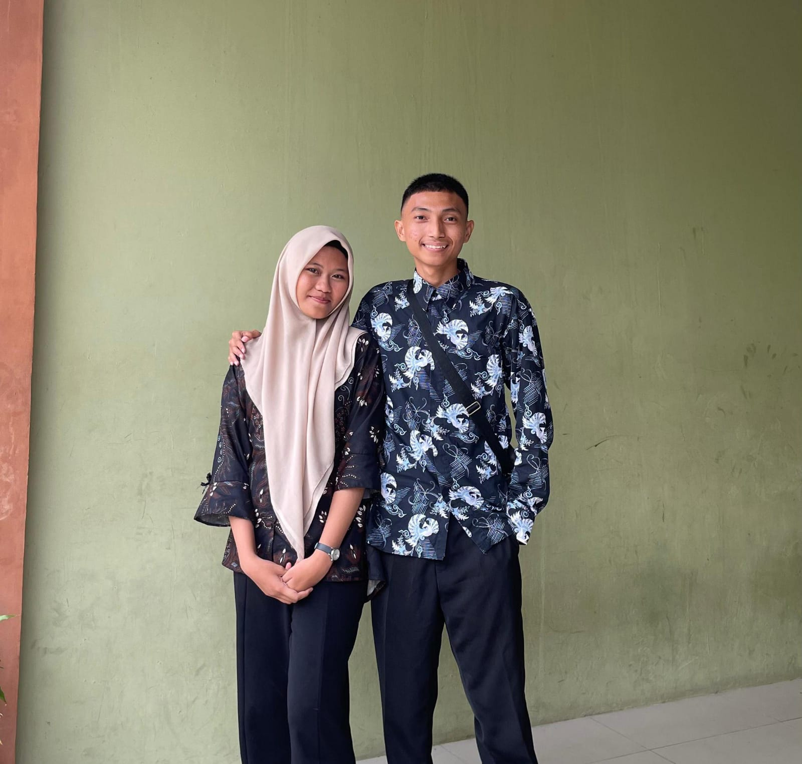

aku cuma mau bilang makasih karena udah hadir di hidup aku. mungkin aku gak selalu bisa nunjukin semuanya dengan kata-kata, tapi sebenarnya aku seneng banget punya kamu. hal kecil yang kamu lakuin kadang bisa bikin hari aku jadi lebih baik tanpa kamu sadar.
aku suka cara kamu hadir, cara kamu bikin aku nyaman, dan cara kamu jadi alasan aku senyum sendiri. semoga kita bisa terus sama-sama, lewatin banyak hal, dan tetap saling ada walaupun kadang keadaan gak selalu mudah.
dan kalau suatu hari nanti kamu capek, jangan lupa kalau masih ada aku yang selalu peduli sama kamu 🤍
— from me ♡